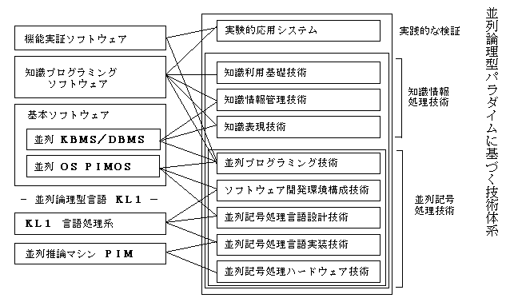

第五世代コンピュータ・プロジェクトは、大規模並列記号処理の諸技術、知識 情報処理の諸基礎技術の研究開発を行ない、大規模並列知識情報処理のための 一貫した技術体系を確立、これに基づく第五世代コンピュータ・プロトタイプ・ システムを構築した。また、その上に実用レベルの複雑さと規模を持つ実験的 応用ソフトウェアを構築し、技術体系の機能の適切性と実装の効率性を実践的 に検証した (詳細は資料2を参照)。
